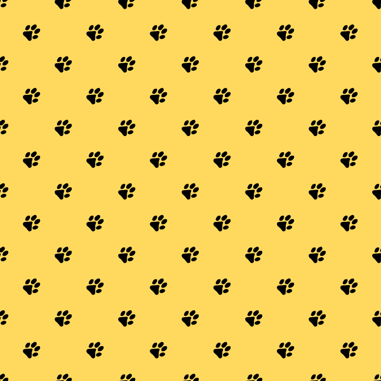
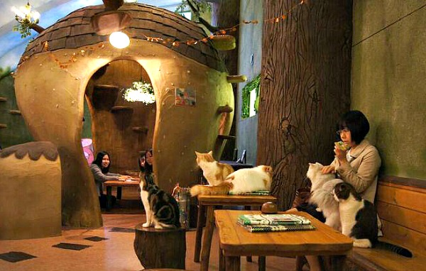
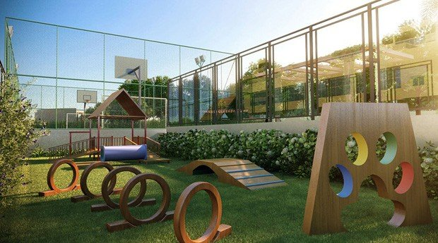

Conheça o primeiro clube para aficcionados em animais domésticos do Brasil

Gato-café
Venha conhecer o nosso café, com deliciosas opções de sobremesas, cafés especiais, achocolatados e vitaminas, tudo isso na companhia dos lindos e carinhosos gatinhos do abrigo. Todos os gatos estão castrados, vermifugados e dispo pra adoção.
Pet Place
Conheça o nosso local de treinamento pet. Aqui vc conta com uma estrutura de cirtcuito e um treinador pra te auxiliar a treinar seu amiguinho ou brincar com nossos peludos do abrigo, todos disponiveis pra adoção.
Voluntarie-se

Não pode adotar, mas ama a causa animal? Nosso abrigo precisa de muita mão de obra pra manter tudo funcionando. Venha ajudar a causa com suas próprias mãos!